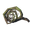
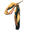
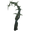
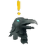

树根
本站支持中英文站内搜索。带 ↗ 的链接指向外部网站；各页来源版本见页脚。
树根 可能指：

邪煞之根，由邪煞之树掉落。
树根（生物），由古树长老召唤。
树根（狂野法杖），由野生之杖召唤。- 远古树根，位于迷雾之地。


 | 本消歧义页列出同名条目。若通过内部链接来到这里，可以修改该链接，让它直接指向所需条目。 |
Root may refer to:
- Root (item), the Abomination drop.
- Root (creature), summoned by The Elder.
- Root (Staff of the Wild), summoned by Staff of the Wild.
- Ancient Roots, found in Mistlands.
| This disambiguation page lists articles associated with the same title. If an internal link referred you here, you may wish to change the link to point directly to the intended article. |